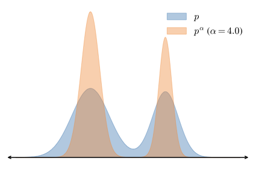
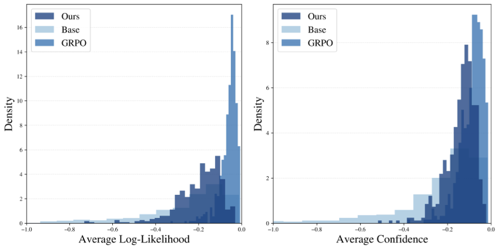
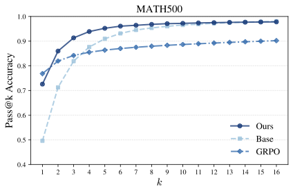

Reasoning with Sampling
Your Base Model is Smarter Than You Think
Understanding Power Distributions and MCMC for LLM Reasoning
Instructor: Hafsteinn Einarsson
University of Iceland
Based on: Karan & Du (2024), Harvard University
Course Context: LLM Reasoning and Posttraining
We've explored how deep learning models learn and generate:
- Transformers: The backbone of modern LLMs
- Attention Mechanisms: Focusing on relevant context
- Autoregressive Generation: Token-by-token sampling
Key Question: How do we enhance reasoning capabilities in LLMs? The standard answer: RL posttrainingReinforcement Learning applied after initial pretraining to improve specific capabilities like reasoning (like GRPOGroup Relative Policy Optimization: A popular RL algorithm for enhancing LLM reasoning on math and coding tasks)
This paper asks: Can we achieve similar reasoning gains through better sampling alone, without any training?
Learning Objectives
By the end of this lecture, you will understand:
📚 Core Concepts
- Distribution sharpening
- Power distributions vs low-temp sampling
- MCMC and Metropolis-Hastings
🧮 Mathematics
- Why pα helps reasoning
- Acceptance ratios in MCMC
- Computational cost analysis
⚙️ Algorithm
- Autoregressive MCMC sampling
- Block-based progression
- Inference-time scaling
📊 Results
- Matching RL performance
- Diversity preservation
- Out-of-domain generalization
The RL Posttraining Paradigm
Standard approach to enhance LLM reasoning:
- Start with a base model (e.g., Qwen2.5-7B)
- Apply RL posttraining with verifiable rewards (MATH, coding problems)
- Get improved reasoning on single-shot tasks
Recent observations about RL posttraining:
- ✅ Single-shot performance improves significantly
- ❌ Multi-shot (pass@k) performance degrades for large k
- 🤔 Samples concentrate at high base model likelihoods
Question: Is RL learning new reasoning capabilities, or just sharpening the base model distribution to favor high-likelihood reasoning traces?
Distribution Sharpening: The Core Question
What is distribution sharpening?
A distribution is sharpened when high-probability regions get even more probability mass, while low-probability regions get less.
Evidence that RL does distribution sharpening:
- Base models have high pass@k: Given enough samples, base models solve many problems
- RL concentrates at high base likelihoods: RL samples are typically high-confidence under the base model
- RL trades multi-shot for single-shot: Performance shifts from pass@100 to pass@1
Key Insight: If RL is "just" sharpening the base distribution, can we explicitly define a sharpened target distribution and sample from it directly?
Main Result: Training-Free Reasoning Enhancement
This paper shows: Sampling from a sharpened distribution (power distribution) at inference time can match or exceed RL posttraining performance!
Key advantages of this approach:
🎯 Training-Free
No hyperparameter tuning or instabilities
📚 Dataset-Free
No need for curated training data
🔓 Verifier-Free
Works beyond easily verifiable domains
Paper Overview: Three Key Contributions
1️⃣ Power Distribution as Sampling Target
Introduce pα as an explicit, parameter-free target distribution that upweights high-likelihood base model sequences
2️⃣ Autoregressive MCMC Algorithm
Develop a Metropolis-HastingsA Markov Chain Monte Carlo algorithm for sampling from unnormalized distributions algorithm adapted for autoregressive LLMs using block-based progressive sampling
3️⃣ Empirical Validation
Demonstrate effectiveness across models (Qwen, Phi) and tasks (MATH500, HumanEval, GPQA, AlpacaEval), showing:
- Comparable in-domain performance to RL
- Superior out-of-domain performance
- Preserved diversity (pass@k doesn't degrade)
Test Your Understanding
Reinforcement Learning for LLMs
RL has become dominant for posttraining LLMs:
RLHFReinforcement Learning from Human Feedback: Training LLMs using human preferences as reward signal (RL from Human Feedback):
- Align LLMs with human preferences
- Uses trained reward model from human comparisons
- Example: ChatGPT's helpful, harmless, honest behavior
RLVRReinforcement Learning with Verifiable Rewards: Using automated verifiers (e.g., test cases for code, answer checking for math) as reward signal (RL with Verifiable Rewards):
- Use automated verifiers as reward signal
- Domains: mathematics (MATH dataset), coding (HumanEval), science (GPQA)
- Simple end-of-generation reward: correct = +1, incorrect = 0
- Led to massive gains in reasoning capabilities
GRPO (Group Relative Policy Optimization) is the standard algorithm, central to recent reasoning advances (DeepSeek-R1, OpenReasoner, Tulu-3)
Related Work: Autoregressive MCMC
Prior work has explored MCMCMarkov Chain Monte Carlo: A class of algorithms for sampling from complex probability distributions by constructing a Markov chain for LLMs:
Tilted distributions (external reward):
Many applications (red-teaming, personalized generation) want to sample from base LLM tilted towards external reward function
- SMCSequential Monte Carlo: A sampling method that maintains multiple candidate sequences and updates them based on expected future reward approaches: Maintain multiple candidates, update based on expected future reward
- Metropolis-Hastings: Iterative resampling with acceptance based on reward
Key Difference in This Paper: The target distribution is completely specified by the base LLM itself (pα), avoiding need for external reward!
Connection to diffusion models:
Sampling from pα is known as annealed or tempered sampling in physics/diffusion literature, used to avoid mode collapse and sample from multimodal distributions
LLM Preliminaries: Token Sequences
Notation and setup:
- $\mathcal{X}$: Finite vocabulary of tokens
- $\mathcal{X}^T$: Set of sequences $x_{0:T} = (x_0, x_1, \dots, x_T)$
- $x_{\le t}$: Tokens before position $t$, i.e., $(x_0, \dots, x_{t-1})$
- $x_{\ge t}$: Tokens after position $t$, i.e., $(x_{t+1}, \dots, x_T)$
Autoregressive generation:
An LLM defines distribution $p$ over sequences by learning conditional next-token distributions:
$$p(x_{0:T}) = \prod_{t=0}^T p(x_t | x_{\le t})$$
Standard sampling: Sample token-by-token using conditional distributions $p(x_t | x_{\le t})$, which directly samples from joint distribution $p(x_{0:T})$
Low-Temperature Sampling: A Common Misconception
What is low-temperature sampling?
Exponentiate the conditional next-token distributions at each step:
$$p_{\text{temp}}(x_t | x_{\le t}) = \frac{p(x_t | x_{\le t})^{\alpha}}{\sum_{x_t' \in \mathcal{X}} p(x_t' | x_{\le t})^{\alpha}}$$
where temperature $\tau = 1/\alpha$ (lower temperature = higher $\alpha$ = sharper distribution)
Common Misconception:
Many believe low-temperature sampling over $T$ tokens samples from $p^{\alpha}$. This is FALSE!
Why are they different?
Low-Temperature:
$$p_{\text{temp}}(x_t | x_{\le t}) \propto \left(\sum_{x_{>t}} p(\mathbf{x})\right)^{\alpha}$$
Exponent of sums
Power Distribution:
$$p_{\text{pow}}(x_t | x_{\le t}) \propto \sum_{x_{>t}} p(\mathbf{x})^{\alpha}$$
Sum of exponents
We'll see why this difference matters for reasoning in the next section!
The Pass@k Diversity Problem with RL
What is pass@kA metric where we generate k different samples, and count the problem as solved if at least one is correct. Measures both quality and diversity.?
Generate $k$ different samples for a problem. The problem is solved if at least one sample is correct.
Observations about RL posttraining:
✅ Single-shot (pass@1)
RL-posttrained models excel at pass@1
❌ Multi-shot (pass@k, large k)
Base models often outperform RL at large k
Why? RL sharpens distribution so much that samples lose diversity. RL trades multi-shot performance for single-shot performance.
Goal of this paper: Achieve high pass@1 (like RL) while maintaining high pass@k (like base model)
Test Your Understanding
What is Distribution Sharpening?
Intuition: We want to bias sampling toward high-likelihood regions
A distribution is sharpened when:
- High-probability regions get more probability mass
- Low-probability regions get less probability mass
- The gap between high and low probabilities increases
Why sharpen for reasoning?
Base models already know how to reason (high pass@k), but correct reasoning traces might have only modest probability. Sharpening makes it more likely to sample correct traces on the first try.
Question: How do we mathematically sharpen a distribution p?
Power Distributions: Mathematical Definition
Power Distribution: For a distribution $p$ and power $\alpha \geq 1$, define:
$$p^{\alpha}(\mathbf{x}) \propto p(\mathbf{x})^{\alpha}$$
(This is an unnormalized distribution - we'll handle normalization later)
Why does this sharpen the distribution?
For any two sequences $\mathbf{x}$ and $\mathbf{x'}$ where $p(\mathbf{x}) > p(\mathbf{x'})$:
$$\frac{p(\mathbf{x})^{\alpha}}{p(\mathbf{x'})^{\alpha}} > \frac{p(\mathbf{x})}{p(\mathbf{x'})} \qquad \text{when } \alpha > 1$$
The relative weight on higher-likelihood sequences increases!
Effect of α:
- α = 1: No sharpening (original distribution)
- α > 1: More sharpening as α increases
- α → ∞: Deterministic (mode only)
Visualization: Sharpening a Mixture of Gaussians
Compare original distribution $p$ (blue) with $p^{\alpha}$ for $\alpha = 4.0$ (orange):
Observations:
- Modes (peaks) become taller and narrower
- Low-density regions become even lower
- The sharpened distribution strongly prefers high-likelihood regions
Power Distribution vs Low-Temperature: The Math
Recall: Low-temperature sampling
$$p_{\text{temp}}(x_t | x_{\le t}) = \frac{p(x_t | x_{\le t})^{\alpha}}{\sum_{x_t'} p(x_t' | x_{\le t})^{\alpha}}$$
For power distribution pα:
The conditional for $x_t$ under $p^{\alpha}$ is:
$$p_{\text{pow}}(x_t | x_{\le t}) \propto \sum_{x_{>t}} p(\mathbf{x})^{\alpha}$$
Sum of exponents
Using Bayes rule to expand:
Since $p(x_t | x_{\le t}) = \frac{p(x_{\leq t})}{p(x_{\le t})} = \frac{\sum_{x_{>t}} p(\mathbf{x})}{\sum_{x_{\geq t}} p(\mathbf{x})}$, we get:
$$p_{\text{temp}}(x_t | x_{\le t}) \propto \left(\sum_{x_{>t}} p(\mathbf{x})\right)^{\alpha}$$
Exponent of sums
These are NOT the same! The order of operations (sum then exponentiate vs exponentiate then sum) produces fundamentally different distributions.
Why Does This Difference Matter?
Key insight about "future paths":
Low-temperature sampling (exponent of sums):
Averages all possible future completions, then exponentiates. This doesn't account for how sharpening affects individual future paths.
Power distribution (sum of exponents):
Exponentiates each possible future completion, then sums. This inherently accounts for future path sharpening.
Consequence: Power distribution upweights tokens with few but high-likelihood future paths, while low-temperature upweights tokens with many but lower-likelihood futures.
Why is this good for reasoning? Tokens that lead to many mediocre futures are often pivotal tokensCritical decision points where choosing the wrong token traps the model in low-likelihood futures, even if the average looks good that trap reasoning. Power distribution avoids this!
Concrete Example: Two-Token Sequences
Setup: Vocabulary $\mathcal{X} = \{a, b\}$, sequences of length 2, $\alpha = 2.0$
Probabilities under base model p:
| Sequence | $aa$ | $ab$ | $ba$ | $bb$ |
| p(sequence) | 0.00 | 0.40 | 0.25 | 0.25 |
So: $p(x_0 = a) = 0.40$, $p(x_0 = b) = 0.50$
Power distribution p2:
$p_{\text{pow}}(x_0=a) \propto 0.00^2 + 0.40^2 = \mathbf{0.16}$
$p_{\text{pow}}(x_0=b) \propto 0.25^2 + 0.25^2 = 0.125$
✅ Prefers $a$ (one high-likelihood path)
Low-temperature:
$p_{\text{temp}}(x_0=a) \propto (0.00 + 0.40)^2 = 0.16$
$p_{\text{temp}}(x_0=b) \propto (0.25 + 0.25)^2 = \mathbf{0.25}$
❌ Prefers $b$ (two mediocre paths)
Result: Power distribution samples the highest-likelihood 2-token sequence ($ab$), while low-temperature gets trapped choosing $b$ first (which leads to lower-likelihood completions).
Test Your Understanding
Critical Windows and Pivotal Tokens
Observation from recent research:
In LLM reasoning, a few tokens are highly influential in determining correctness.
These are called critical windowsTime periods during generation where the model makes key decisions that strongly affect the final output quality or pivotal tokensSpecific tokens that are decision points: choosing correctly leads to high-quality completions, choosing incorrectly traps in low-quality futures.
Two types of pivotal tokens:
✅ Positive Pivotal Token
Has one (or few) high-likelihood future path(s)
Example: Choosing the correct first step in a math proof
❌ Negative Pivotal Token
Has many low-likelihood future paths
Example: Starting with a plausible but wrong approach that leads nowhere
Key Finding: Sharp critical windows (where wrong tokens trap reasoning) correlate strongly with reasoning failures!
Power Distributions Favor Positive Pivotal Tokens
Recall the key observation:
Power distribution upweights tokens with few but high-likelihood future paths, while low-temperature upweights tokens with many but low-likelihood futures.
Why this matters for reasoning:
- Negative pivotal tokens might have high average likelihood (many mediocre futures), making them attractive to low-temperature sampling
- But each individual future from negative pivotal tokens has low likelihood
- Power distribution exponentiates before summing, so it sees these individual futures as low-quality
- Positive pivotal tokens with one great path get upweighted by power distribution!
Embedded in pα: An implicit bias toward planning for future high-likelihood tokens, which helps avoid reasoning traps!
Formal Statement: When Power Distribution Wins
Setup: Compare positive vs negative pivotal tokens
- Positive pivotal token $x_t$: marginal weight $\varepsilon$, concentrated on one future (likelihood $\varepsilon$)
- Negative pivotal token $x_t'$: marginal weight $\varepsilon'$, spread over $N$ futures (each likelihood $\varepsilon'/N$)
Proposition: If the marginal weights satisfy:
$$\frac{\varepsilon'}{N^{1 - 1/\alpha}} < \varepsilon < \varepsilon'$$
Then:
- ✅ Power distribution upweights $x_t$ (positive pivotal)
- ❌ Low-temperature upweights $x_t'$ (negative pivotal)
Intuition:
Even though $\varepsilon' > \varepsilon$ (negative pivotal has higher total mass), the positive pivotal token has a higher-quality individual future ($\varepsilon > \varepsilon'/N$), which power distribution recognizes!
Visual Intuition: Planning for the Future
Scenario: Choosing next token at a decision point
❌ Token A (Negative Pivotal)
Marginal weight: 0.50
Future paths:
- Path 1: 0.20
- Path 2: 0.15
- Path 3: 0.15
Many mediocre futures!
Low-temp: $(0.50)^2 = \mathbf{0.25}$ ✓
Power: $0.20^2 + 0.15^2 + 0.15^2 = 0.085$
✅ Token B (Positive Pivotal)
Marginal weight: 0.35
Future paths:
- Path 1: 0.35
One excellent future!
Low-temp: $(0.35)^2 = 0.1225$
Power: $0.35^2 = \mathbf{0.1225}$ ✓
Result: Power distribution chooses Token B (the one with the best individual future), while low-temperature chooses Token A (high average but poor individual futures).
Why This Helps Mathematical and Coding Reasoning
Reasoning often involves critical decision points:
🔢 Mathematics Example:
Solving a quadratic equation: Should you factor or use the quadratic formula?
- Wrong approach might be "plausible" (many ways to try factoring), giving it high average likelihood
- Right approach (quadratic formula) has one clear, high-likelihood path to solution
- Power distribution recognizes the single high-quality path!
💻 Coding Example:
Implementing a sorting algorithm: Should you use nested loops or recursion?
- Wrong structure might have many variations (different loop conditions), appearing diverse
- Correct structure has one clean implementation path
- Power distribution prefers the clean, high-likelihood path!
Summary: Power distributions have an implicit forward-looking bias that helps avoid reasoning dead-ends!
Test Your Understanding
The Challenge: Sampling from pα
We want to sample from the power distribution pα
What we have:
- Base LLM $p$ that can compute $p(x_{0:T})$ for any sequence
- Can easily compute $p(x_{0:T})^{\alpha}$ (unnormalized power distribution)
The problem:
To sample from the true power distribution, we need the normalization constant:
$$Z = \sum_{\mathbf{x} \in \mathcal{X}^T} p(\mathbf{x})^{\alpha}$$
This sum is over all possible sequences of length $T$ - computationally intractable!
Solution: Use MCMCMarkov Chain Monte Carlo: A class of algorithms for sampling from distributions when direct sampling is intractable to sample from unnormalized distributions!
What is Markov Chain Monte Carlo (MCMC)?
Core Idea:
Construct a Markov chainA sequence of random samples where each sample depends only on the previous one, not the entire history of samples that, over time, converges to sampling from the target distribution.
How it works:
- Start with an initial sample $\mathbf{x}^0$
- Iterate: From current sample $\mathbf{x}^i$, generate a candidate $\mathbf{x}'$ using a proposal distribution $q(\mathbf{x}'|\mathbf{x}^i)$
- Accept or reject the candidate based on some acceptance criterion
- Repeat until the chain has "mixed" (converged to target distribution)
Key property: Under mild conditions, the distribution of samples $\mathbf{x}^n$ converges to the target distribution as $n \to \infty$, even without knowing the normalization constant!
Metropolis-Hastings Algorithm
A classic MCMC algorithm for sampling from unnormalized distributions
Algorithm steps:
- Given current state $\mathbf{x}^i$, sample a candidate $\mathbf{x}' \sim q(\cdot | \mathbf{x}^i)$ from proposal distribution
- Compute the acceptance ratio:
$$A(\mathbf{x}', \mathbf{x}^i) = \min\left\{1, \frac{p^{\alpha}(\mathbf{x}') \cdot q(\mathbf{x}^i | \mathbf{x}')}{p^{\alpha}(\mathbf{x}^i) \cdot q(\mathbf{x}' | \mathbf{x}^i)}\right\}$$
- Accept $\mathbf{x}^{i+1} = \mathbf{x}'$ with probability $A(\mathbf{x}', \mathbf{x}^i)$
- Otherwise reject: $\mathbf{x}^{i+1} = \mathbf{x}^i$ (stay at current state)
Crucial insight: The normalization constants in $p^{\alpha}(\mathbf{x}')$ and $p^{\alpha}(\mathbf{x}^i)$ cancel out in the ratio! We only need unnormalized values.
Understanding the Acceptance Ratio
The acceptance ratio has two components:
$$A(\mathbf{x}', \mathbf{x}^i) = \min\left\{1, \underbrace{\frac{p^{\alpha}(\mathbf{x}')}{p^{\alpha}(\mathbf{x}^i)}}_{\text{target ratio}} \cdot \underbrace{\frac{q(\mathbf{x}^i | \mathbf{x}')}{q(\mathbf{x}' | \mathbf{x}^i)}}_{\text{proposal ratio}}\right\}$$
Target ratio:
$\frac{p^{\alpha}(\mathbf{x}')}{p^{\alpha}(\mathbf{x}^i)}$
Favors candidates with higher target density (higher $p^{\alpha}$)
Proposal ratio:
$\frac{q(\mathbf{x}^i | \mathbf{x}')}{q(\mathbf{x}' | \mathbf{x}^i)}$
Corrects for asymmetry in proposal (ensures detailed balance)
Intuition:
- If candidate is much better ($p^{\alpha}(\mathbf{x}') \gg p^{\alpha}(\mathbf{x}^i)$): Always accept (ratio > 1, min gives 1)
- If candidate is slightly worse: Accept with some probability (helps avoid getting stuck)
- If candidate is much worse: Rarely accept
Requirements for Proposal Distribution
For Metropolis-Hastings to converge to the target distribution, the proposal $q$ must satisfy:
1️⃣ Irreducibility:
For any set $X$ with nonzero mass under $p^{\alpha}$, the proposal has nonzero probability of eventually reaching $X$.
In other words: You can get anywhere from anywhere (eventually)
2️⃣ Aperiodicity:
The chain doesn't return to the same state after a fixed number of steps.
In other words: No deterministic cycles
Result: Under these minimal conditions, the Markov chain converges to sampling from $p^{\alpha}$, regardless of starting point!
Random Resampling Proposal for LLMs
The paper uses a "random resampling" proposal distribution:
Proposal $q(\mathbf{x}' | \mathbf{x}^i)$:
- Select a random index $t \in \{1, \dots, T\}$ uniformly (probability $1/T$)
- Keep prefix $x_{0:t-1}$ from current sequence
- Resample from position $t$ onward using a proposal LLM $p_{\text{prop}}$:
$$x_t', x_{t+1}', \dots, x_T' \sim p_{\text{prop}}(x_k | x_{\le k}) \text{ for } k \geq t$$
Computing the proposal ratio:
By symmetry: we can treat $\mathbf{x}^i$ as a "resampling" of $\mathbf{x}'$, so:
$$\frac{q(\mathbf{x}^i | \mathbf{x}')}{q(\mathbf{x}' | \mathbf{x}^i)} = \frac{p_{\text{prop}}(\mathbf{x}^i \text{ from } t)}{p_{\text{prop}}(\mathbf{x}' \text{ from } t)}$$
Why this works: Since we can resample from any position with nonzero probability, we can reach any sequence from any other sequence → irreducible and aperiodic ✓
Visualizing Metropolis-Hastings with Random Resampling
Process:
- Start with current sequence
- Pick random index $t$
- Resample from $t$ onward to get candidate
- Compare $p^{\alpha}(\text{candidate})$ vs $p^{\alpha}(\text{current})$
- Accept or reject based on acceptance ratio
- Repeat!
Test Your Understanding
The Practical Challenge: Mixing Time
Direct implementation of Metropolis-Hastings for LLMs:
- Initialize with complete sequence of length $T$
- Run many MCMC iterations, each generating full-length candidates
- Wait for convergence...
Problem: This requires many expensive full-sequence generations!
The mixing timeNumber of MCMC iterations required before the chain converges to sampling from the target distribution problem:
- Poor initialization or proposal can lead to exponentially large number of samples needed
- High-dimensional spaces (long token sequences) exacerbate this problem
- Bad starting point → stuck for many iterations
Solution: Leverage autoregressive structure to progressively build up the sequence!
Key Idea: Progressive Block-Based Sampling
Instead of sampling the full sequence at once, build it progressively:
Define intermediate target distributions:
$$\emptyset \longrightarrow p(x_{0:B})^{\alpha} \longrightarrow p(x_{0:2B})^{\alpha} \longrightarrow \cdots \longrightarrow p(x_{0:T})^{\alpha}$$
where $B$ is the block size (hyperparameter)
Notation: Let $\pi_k$ denote the power distribution over sequences of length $kB$:
$$\pi_k(x_{0:kB}) \propto p(x_{0:kB})^{\alpha}$$
Progressive sampling strategy:
- Sample from $\pi_1$ (first block)
- Given sample from $\pi_k$, use it to initialize sampling from $\pi_{k+1}$ (next block)
- Repeat until full sequence length $T$
Each transition uses MCMC, but with good initialization from previous block!
Algorithm 1: Power Sampling for Autoregressive Models
Input: Base model $p$, proposal $p_{\text{prop}}$, power $\alpha$, length $T$
Hyperparams: Block size $B$, MCMC steps $N_{\text{MCMC}}$
Output: Sequence $(x_0, \dots, x_T) \sim p^{\alpha}$
Notation:
$\pi_k(x_{0:kB}) \propto p(x_{0:kB})^{\alpha}$ (unnormalized target at stage $k$)
For k = 0 to ⌈T/B⌉ - 1:
// Given prefix $x_{0:kB}$, sample from $\pi_{k+1}$
1. Initialize by extending with $p_{\text{prop}}$:
For $t = kB+1$ to $(k+1)B$:
$x_t^{(0)} \sim p_{\text{prop}}(x_t | x_{\le t})$
Set $\mathbf{x} \gets \mathbf{x}^{(0)}$
2. Run MCMC for $N_{\text{MCMC}}$ iterations:
For n = 1 to $N_{\text{MCMC}}$:
a. Sample resampling index $m \sim \text{Uniform}\{1, \dots, (k+1)B\}$
b. Generate candidate by resampling from $m$:
Keep prefix: $x'_{0:m-1} = x_{0:m-1}$
For $t = m$ to $(k+1)B$:
$x_t' \sim p_{\text{prop}}(x_t | x_{\le t})$
c. Compute acceptance ratio:
$$A(\mathbf{x}', \mathbf{x}) = \min\left\{1, \frac{\pi_k(\mathbf{x}')}{\pi_k(\mathbf{x})} \cdot \frac{p_{\text{prop}}(\mathbf{x}|\mathbf{x}')}{p_{\text{prop}}(\mathbf{x}'|\mathbf{x})}\right\}$$
d. Accept or reject:
Draw $u \sim \text{Uniform}(0, 1)$
If $u \leq A(\mathbf{x}', \mathbf{x})$: Set $\mathbf{x} \gets \mathbf{x}'$ (accept)
3. Fix prefix for next stage:
Set $x_{0:(k+1)B} \gets \mathbf{x}$
Return $x_{0:T}$
Algorithm Walkthrough: Step by Step
Example: Generating sequence of length T = 3B
Stage k=0: Sample first block $x_{0:B}$
- Initialize: Sample $x_0, \dots, x_B$ from $p_{\text{prop}}$
- MCMC: Run $N_{\text{MCMC}}$ iterations of random resampling
- Result: Sample from $\pi_1$ (power distribution over length $B$)
Stage k=1: Extend to $x_{0:2B}$
- Keep $x_{0:B}$ from stage 0
- Initialize: Sample $x_{B+1}, \dots, x_{2B}$ from $p_{\text{prop}}$
- MCMC: Run $N_{\text{MCMC}}$ iterations (can resample any position 0 to 2B)
- Result: Sample from $\pi_2$ (power distribution over length $2B$)
Stage k=2: Final extension to $x_{0:3B}$
- Keep $x_{0:2B}$ from stage 1
- Initialize: Sample $x_{2B+1}, \dots, x_{3B}$ from $p_{\text{prop}}$
- MCMC: Run $N_{\text{MCMC}}$ iterations (can resample any position 0 to 3B)
- Result: Sample from $\pi_3 = p^{\alpha}$ (full sequence!)
Computational Cost Analysis
How many tokens does the algorithm generate?
At stage $k$ (sampling from $\pi_k$):
- Sequence has length $kB$
- Each MCMC step resamples from random position
- Average resample length: $kB/2$ tokens
- Total for stage $k$: $N_{\text{MCMC}} \times kB/2$ tokens
Summing over all stages $k = 1$ to $\lceil T/B \rceil$:
$$\mathbb{E}[\text{tokens}] = N_{\text{MCMC}} \sum_{k=1}^{\lceil T/B \rceil} \frac{kB}{2} \approx \frac{N_{\text{MCMC}} T^2}{4B}$$
Comparison to standard inference:
Standard inference generates $T$ tokens. Power sampling generates approximately:
$$\frac{N_{\text{MCMC}} T}{4B} \times \text{ more tokens}$$
Tradeoff: Larger $B$ requires fewer stages but bigger "jumps" between $\pi_k$ (needs more MCMC steps). Smaller $B$ has more stages but easier transitions.
Inference-Time Scaling: Trading Compute for Quality
Key Insight:
Power sampling is single-shot: even though multiple inference calls are made, we're sampling one high-quality sequence from $p^{\alpha}$, not multiple independent samples.
This is a new axis for inference-time scaling:
- Traditional scaling: Generate $k$ independent samples, hope one is good (pass@k)
- Power sampling: Use extra compute to sample a single better sequence
Hyperparameters control compute-quality tradeoff:
- $\alpha$: How much to sharpen (higher = more aggressive)
- $N_{\text{MCMC}}$: Convergence quality (higher = better approximation of $p^{\alpha}$)
- $B$: Block size (affects number of stages and MCMC difficulty)
Test Your Understanding
Experimental Setup
Evaluation Benchmarks:
MATH500
Competition math problems (geometry, algebra, number theory). Subset of 500 from MATH test set.
HumanEval
164 programming problems with unit tests. Tests algorithms, reasoning, and language comprehension.
GPQA Diamond
198 multiple-choice science questions (physics, chemistry, biology) requiring advanced reasoning.
AlpacaEval 2.0
805 prompts for general helpfulness. Scored by GPT-4-turbo judge. Non-verifiable domain.
Models Tested:
- Qwen2.5-Math-7B: Math-specialized base model
- Qwen2.5-7B: General-purpose base model
- Phi-3.5-mini-instruct: Smaller instruction-tuned model
Baseline: GRPO (Group Relative Policy Optimization)
Standard RL algorithm, posttrained on MATH training split
Power Sampling Hyperparameters
Configuration:
- Max length $T_{\text{max}}$: 3072 tokens (can terminate earlier with EOS)
- Block size $B$: 192 tokens ($T_{\text{max}}/16$)
- Power $\alpha$: 4.0 for reasoning tasks, varies for AlpacaEval
- Proposal LLM: Base model with temperature $1/\alpha$ for reasoning; $\tau=0.5$ for AlpacaEval
- MCMC steps $N_{\text{MCMC}}$: 10 (found empirically sufficient)
Key finding: Performance is relatively stable across $\alpha \geq 2.0$, and 10 MCMC steps provide good convergence.
Main Results: Power Sampling vs GRPO
| Model / Method | MATH500 | HumanEval | GPQA | AlpacaEval2.0 |
|---|---|---|---|---|
| Qwen2.5-Math-7B | ||||
| Base | 0.496 | 0.329 | 0.278 | 1.61 |
| Low-temperature | 0.690 | 0.512 | 0.353 | 2.09 |
| Power Sampling (Ours) | 0.748 | 0.573 ↑ | 0.389 | 2.88 ↑ |
| GRPO (MATH) | 0.785 | 0.537 | 0.399 | 2.38 |
| Qwen2.5-7B | ||||
| Base | 0.498 | 0.329 | 0.278 | 7.05 |
| Power Sampling (Ours) | 0.706 | 0.622 ↑ | 0.318 | 8.59 ↑ |
| GRPO (MATH) | 0.740 | 0.561 | 0.354 | 7.62 |
| Phi-3.5-mini-instruct | ||||
| Base | 0.400 | 0.213 | 0.273 | 14.82 |
| Power Sampling (Ours) | 0.508 ↑ | 0.732 ↑ | 0.364 ↑ | 17.65 ↑ |
| GRPO (MATH) | 0.406 | 0.134 | 0.359 | 16.74 |
↑ indicates power sampling outperforms GRPO on that task
Key Findings from Results
✅ Comparable In-Domain Performance
On MATH500 (in-domain for GRPO training), power sampling achieves 74.8% vs GRPO's 78.5% for Qwen2.5-Math - nearly matching RL without any training!
🚀 Superior Out-of-Domain Performance
On HumanEval and AlpacaEval (out-of-domain for MATH-trained GRPO), power sampling consistently outperforms RL across all models!
- HumanEval: +3.6% to +59.8% improvement over GRPO
- AlpacaEval: Consistently higher win rates
💪 Massive Gains Over Base Models
Power sampling provides substantial boosts across all tasks:
- MATH500: +10.8% to +25.2%
- HumanEval: +24.4% to +51.9%
- GPQA: Up to +9.1%
Test Your Understanding
Analysis: Likelihood and Confidence Distributions
Where do samples come from in the base model distribution?
Log-Likelihoods
- GRPO: Highly concentrated peak (low diversity)
- Power sampling: Shifted toward high likelihood but with spread
- Base: Wide distribution
Confidences
- Both power sampling and GRPO sample from high-confidence regions
- Confirms: high base model confidence correlates with correct reasoning
Insight: Power sampling achieves similar high-likelihood/high-confidence sampling as GRPO, but maintains more diversity!
Diversity Preserved: Pass@k Performance
MATH500 pass@k: Quality AND diversity!
Key observations:
- Power sampling (green) is strictly better than both base and GRPO for k > 1
- GRPO (red) plateaus early - diversity collapse!
- Base model (blue) has good pass@k at large k, but poor pass@1
- Power sampling achieves best of both worlds: good pass@1 AND pass@k
Conclusion: Unlike RL, power sampling doesn't trade multi-shot for single-shot performance!
Hyperparameter Effects: α and NMCMC
Effect of α (power)
- α = 1.0: No sharpening (base model)
- α = 4.0: Optimal for reasoning
- α → ∞: Too greedy, may overfit
- Stable for α ∈ [2, 6]
Effect of NMCMC
- N = 0: Just proposal sampling
- N = 2: Already significant improvement
- N = 10: Converged performance
- Beyond 10: Diminishing returns
Computational Cost: Power Sampling vs GRPO Training
Token generation multiplier for power sampling:
With $N_{\text{MCMC}} = 10$, $T = 679$ (avg. output length), $B = 192$:
$$\text{Multiplier} = \frac{N_{\text{MCMC}} T}{4B} = \frac{10 \times 679}{4 \times 192} \approx \mathbf{8.84\times}$$
Comparison to GRPO training:
- GRPO generates ~8-16 rollouts per training example
- One epoch of GRPO ≈ similar or more cost than power sampling
- But GRPO requires multiple epochs, hyperparameter tuning, curated dataset
Conclusion: Roughly same inference cost as one GRPO epoch, but with no training overhead!
Summary: Key Takeaways
🎯 Main Result
Base models are much more capable at single-shot reasoning than current sampling methods reveal. Pure inference-time sampling can match or exceed RL posttraining!
💡 Key Insights
- Distribution sharpening is achievable without training via power distributions pα
- Power distributions account for future paths, avoiding reasoning traps better than low-temperature sampling
- Autoregressive MCMC makes sampling from pα practical despite intractability
- Diversity is preserved - no pass@k degradation unlike RL
🚀 Implications
- Inference-time scaling: Trade compute for quality without training
- Works beyond verifiable domains (no reward signal needed)
- Better generalization: Outperforms RL out-of-domain
- Suggests base models have latent capabilities we can unlock with better sampling
Future Directions and Open Questions
Potential extensions and research directions:
🔬 Algorithmic Improvements
- Better proposal distributions (learned proposals?)
- Adaptive α selection based on problem difficulty
- Faster convergence through improved block size scheduling
🌍 Broader Applications
- Combining power sampling with RL (best of both?)
- Application to other modalities (vision, multimodal)
- Long-form reasoning and multi-turn dialogue
🤔 Theoretical Understanding
- What exactly are the capabilities present in base models?
- Can we characterize when sharpening helps vs hurts?
- Connection to meta-learning and in-context learning?